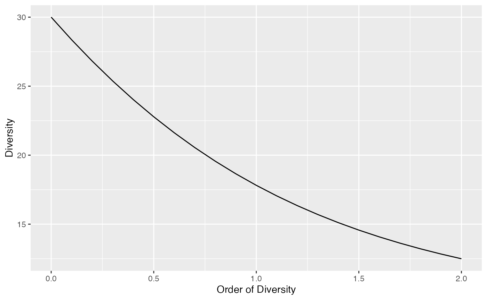
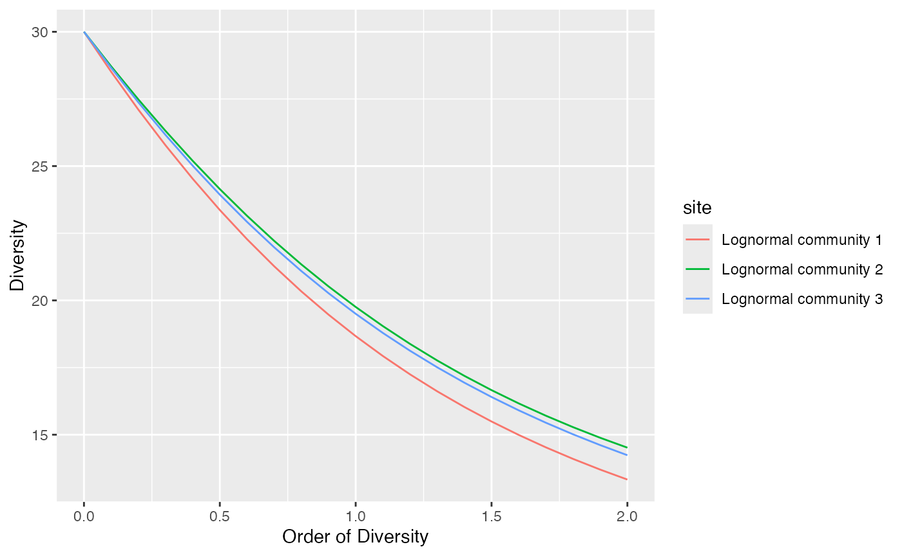

entropart is being superseded by the divent package. It will be maintained, i.e. bugs will be corrected and updates required by CRAN will be made, but no new development is expected.
General changes
Object names follow the Pascal-case style in entropart, e.g.
DivPart(). divent follows the recommendations of
the tidyverse, e.g. snake-case names with prefixes,
e.g. div_part().
Functions’ values are often lists in entropart, vs. tibbles
in divent, where argument as_numeric = TRUE allows
obtaining numeric outputs from many functions.
Abundance or probability data are named vectors in
entropart, declared as AbdVector or
ProbaVector objects by the as.AbdVector() or
as.ProbaVector()function. In divent, numeric
vectors are used directly or converted to tibbles of class
abundances or probabilities by functions
as_abundances() or as_probabilities().
The following table shows the correspondence between entropart and divent functions.
Function names
| entropart | divent |
|---|---|
AbdFreqCount():
Abundance Frequency Count of a Community |
abd_freq_count() |
AllenH():
Phylogenetic Entropy of a Community |
ent_allen() |
CommunityProfile():
Diversity Profile of a Community. Argument `FUN` defines the diversity
function. |
- profile_hill()
: Taxonomic Diversity Profile of a Community- profile_phylo():
Phylogenetic Diversity Profile of a Community- profile_similarity():
Similarity-Based Diversity Profile of a Community |
Coverage():
Sample coverage of a community |
coverage() |
DivAC():
Diversity accumulation. |
accum_hill() |
Diversity()
/ bcDiversity():
Hill number of a community |
div_hill() |
DivPart():
Diversity Partition of a metacommunity |
div_part() |
Dqz()
/ bcDqz():
Similarity-based diversity of a community |
div_similarity() |
Enq():
Grassberger’s expectation of
|
e_n_q() |
EntAC():
Entropy accumulation. |
accum_tsallis() |
expq():
Exponential of order q |
exp_q() |
GenSimpson()
/ bcGenSimpson():
Generalized Simpson’s Entropy |
ent_gen_simpson() |
GenSimpsonD()
/ bcGenSimpsonD():
Generalized Simpson’s Diversity |
div_gen_simpson() |
Hqz()
/ bcHqz():
Similarity-based entropy of a community |
ent_similarity() |
Hurlbert()
/ bcHurlbert():
Hurlbert’s Entropy |
ent_hurlbert() |
HurlbertD()
/ bcHurlbertD():
Hurlbert’s Explicit Diversity |
div_hurlbert() |
lnq():
Logarithm of order q |
ln_q() |
MetaCommunity():
Metacommunity class |
metacommunity():
Aggregate communities into a metacommunity |
PDFD():
Phylogenetic Diversity / Functional Diversity of a Community |
div_pd() |
PhyloDiversity()
/ bcPhyloDiversity():
Phylogenetic Diversity of a Community |
div_phylo() |
PhyloEntropy()
/ bcPhyloEntropy():
Phylogenetic Entropy of a community |
ent_phylo() |
RAClnorm()
/ RACgeom()
/ RAClseries()
/ RACbstick():
Fit Distributions to Well-Known Rank Abundance Curves. |
fit_rac():
the distribution argument selects the model. |
Rao()
/ bcRao():
Rao’s Quadratic Entropy of a Community |
ent_rao() |
rCommunity():
Random Communities |
rcommunity() |
Richness()
/ bcRichness():
Number of species of a community |
div_richness() |
Shannon()
/ bcShannon():
Shannon entropy of a community |
ent_shannon() |
Simpson()
/ bcSimpson():
Simpson entropy of a community |
ent_simpson() |
Tsallis()
/ bcTsallis():
Tsallis (HCDT) Entropy of a community |
ent_tsallis() |
Examples
The examples below show how to create a random community with both packages and estimate its diversity.
set.seed(97310)
# entropart
library("entropart")
# Random community, lognormal, 1000 individuals, 30 species
the_community <- entropart::rCommunity(
n = 1,
size = 1000,
S = 30,
Distribution = "lnorm"
)
# Shannon's entropy
Shannon(the_community)## UnveilJ
## 2.880002
# Shannon's diversity (Hill number of order 1)
Diversity(the_community, q = 1)## UnveilJ
## 17.8143
# Diversity profile
CommunityProfile(Diversity, the_community) |>
autoplot()
divent supports multiple communities.
## Loading required package: Rcpp## ── Attaching core tidyverse packages ──────────────────────── tidyverse 2.0.0 ──
## ✔ dplyr 1.2.1 ✔ readr 2.2.0
## ✔ forcats 1.0.1 ✔ stringr 1.6.0
## ✔ ggplot2 4.0.4 ✔ tibble 3.3.1
## ✔ lubridate 1.9.5 ✔ tidyr 1.3.2
## ✔ purrr 1.2.2## ── Conflicts ────────────────────────────────────────── tidyverse_conflicts() ──
## ✖ dplyr::filter() masks stats::filter()
## ✖ dplyr::lag() masks stats::lag()
## ℹ Use the conflicted package (<http://conflicted.r-lib.org/>) to force all conflicts to become errors
# 3 random communities, lognormal, 1000 individuals, 30 species
rcommunity(
n = 3,
size = 1000,
species_number = 30,
distribution = "lnorm"
) |>
# Give it a name
mutate(site = paste("Lognormal community", 1:3)) ->
the_communities
# Shannon's entropy
ent_shannon(the_communities)## # A tibble: 3 × 5
## site weight estimator order entropy
## <chr> <dbl> <chr> <dbl> <dbl>
## 1 Lognormal community 1 1000 UnveilJ 1 2.93
## 2 Lognormal community 2 1000 UnveilJ 1 2.98
## 3 Lognormal community 3 1000 UnveilJ 1 2.97
# Shannon's diversity, numeric values
div_hill(the_communities, q = 1, as_numeric = TRUE)## [1] 18.66929 19.75556 19.50123
# Diversity profile
profile_hill(the_communities) |>
autoplot()